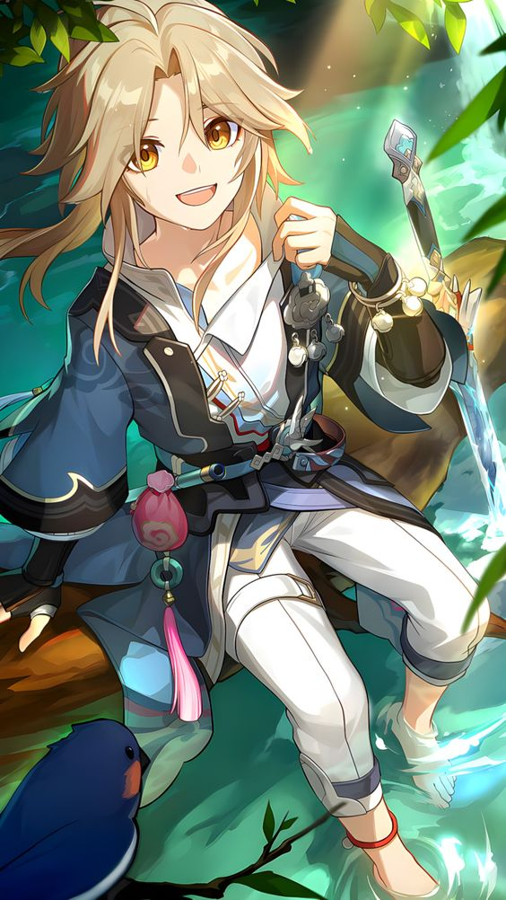
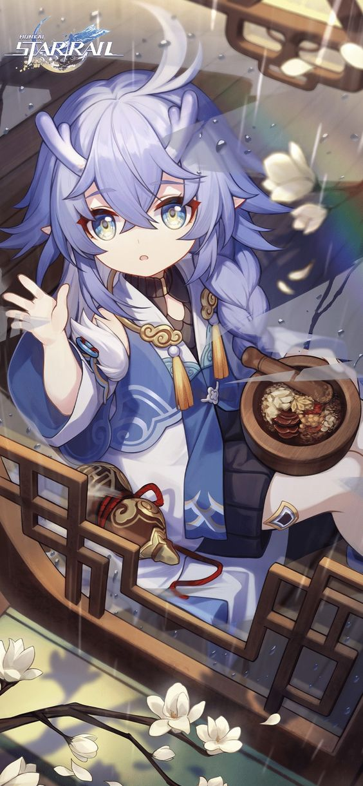
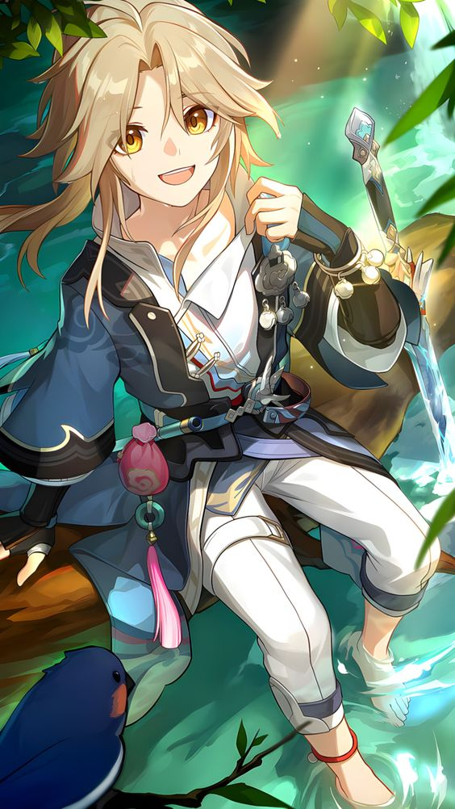
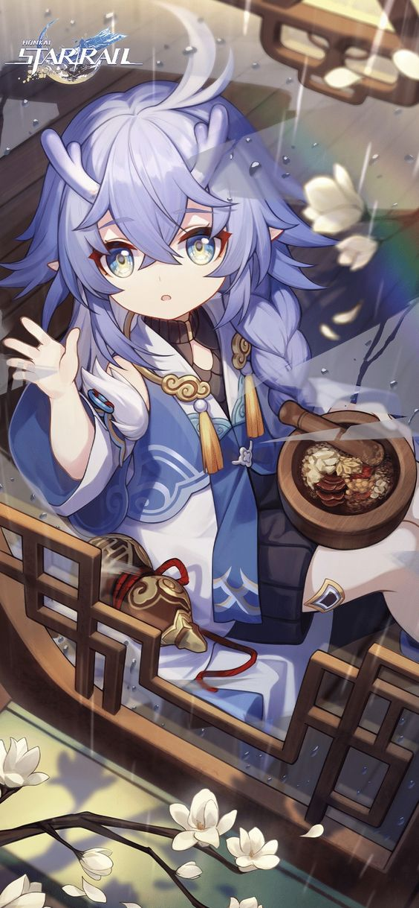

The Xianzhou Loufu
Jing Yuan
His appearance may be one of indolence,the cloud knight general who comands the Xianzhou Luofu is more meticulous than seemingly meets the eye. But does not consider saving a situation from the brink of disaster to be a show of wisdom, and is thus fastidious with routine affairs to avoids any potential problems.
Yanqing
The spirited lieutenant of the Xianzhou Loufu, and also it's most proficient swordsman. HE is born for sword and obsessed with them. none would dare to underestimate this genius still in the early days of his youth perhaps the only thing capable of dulling his treasured blade's sharp edge is time.
Bailu
A vivacious young lady of the Vidyadhara race,she is also known as 'a healer lady' due to her expertise with medicine. She is often dishes out unorthodox prescription such as "stay well hydrated" and "get a good night rest" But bailu cannot bear to see people get suffer.
Tingyun
Tingyun is the head representative of the Whistling flames, a merchant guild official approved by the sky pairing comission. She has such a way with words that often leaves her audience waiting for more captivating tales.